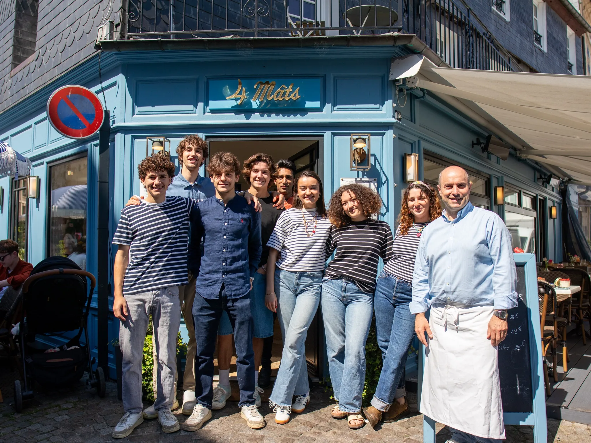

L'Équipe
Une équipe passionnée à votre service

Notre philosophie
Aux 4 Mats, nous sommes une famille avant tout. Chaque membre de notre équipe partage la même passion pour la cuisine et l'hospitalité.
Nous croyons que la qualité d'un repas ne réside pas seulement dans l'assiette, mais aussi dans l'ambiance et le service. C'est pourquoi nous mettons un point d'honneur à créer une atmosphère chaleureuse et conviviale, où chacun se sent comme à la maison.
De la sélection des produits frais à la présentation des plats, en passant par l'accueil de nos clients, chaque détail compte pour nous. Nous sommes fiers de notre travail et de l'expérience que nous offrons à nos hôtes.
Rejoignez-nous et découvrez l'ambiance authentique et familiale qui fait la réputation des 4 Mats à Honfleur.
Nos valeurs
Passion
Une passion authentique pour la cuisine et le service, transmise à chaque client. Chaque plat est préparé avec amour et attention aux détails.
Convivialité
Une ambiance chaleureuse et accueillante, où chacun se sent comme à la maison. Nous créons des moments de partage inoubliables.
Excellence
Un engagement constant pour la qualité et le détail dans chaque aspect de notre service, de la cuisine à l'accueil.
Notre engagement
Chez Les 4 Mats, nous nous engageons à vous offrir une expérience culinaire exceptionnelle, alliant produits de qualité, savoir-faire traditionnel et innovation.
Notre équipe travaille chaque jour avec passion pour vous proposer des plats faits maison, préparés avec des produits frais et locaux. Nous privilégions les producteurs normands et les produits de la mer de notre région.
Votre satisfaction est notre priorité. N'hésitez pas à nous faire part de vos retours et de vos suggestions pour que nous puissions toujours mieux vous servir.
Venez nous rencontrer
Notre équipe sera ravie de vous accueillir et de partager avec vous notre passion pour la cuisine normande et les produits de la mer.